ft_printf

Intro
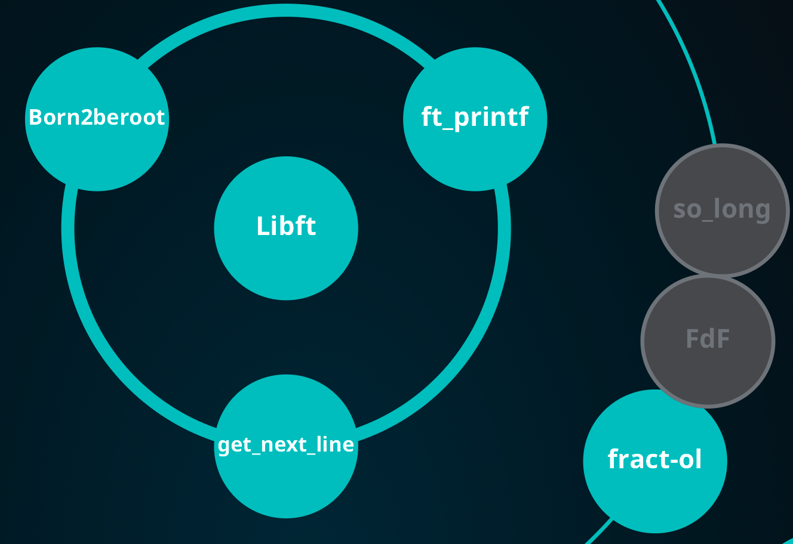
ft_printf는 42 Seoul 공통과정 초반에 수행했던 과제입니다. 개인적으로는 지금처럼 ai가 코드를 짜주는 시대 이전에 한 줄 한 줄 공들여가며 짰던 코드라서 정감이 가는 프로젝트입니다. 투박하고 난잡하지만 그 시절 저만의 문법이 많이 담겨 있습니다. 3년이라는 시간이 지나 코드의 세부 내용은 많이 희미해졌지만, C언어에 대한 기억을 되살려가며 코드를 하나씩 설명해보도록 하겠습니다.
프로젝트 설명
개요
이 프로젝트는 C언어의 printf 함수를 직접 구현하는 과제입니다. 얼핏 단순해 보이지만, printf의 작동 원리를 깊이 이해해야 하는 복잡한 과제입니다. 구현 시 반드시 norminette 규칙을 준수해야 하는데, 이는 코드의 가독성을 위한 것이고, 대표적인 예시는 다음과 같습니다.
- 파일당 함수 5개 이하
- 함수당 코드 25줄 이하
- 한 줄당 80자 이하
재가 작성한 코드 중에서 이 규칙을 피하기 위해 온 몸 비틀기를 한 흔적이 남아있습니다. (이 부분이 ai로는 절대 짤 수 없는 재미 포인트죠. 지저분하지만 말입니다. 하하) 구현의 정확성을 위해 ISO C99 표준 문서의 285페이지를 참고했습니다. 자세한 내용은 코드와 함께 설명드리겠습니다.
이 포스팅에서 makefile과 ar 명령어에 대한 설명은 생략하겠습니다.
Mandatory
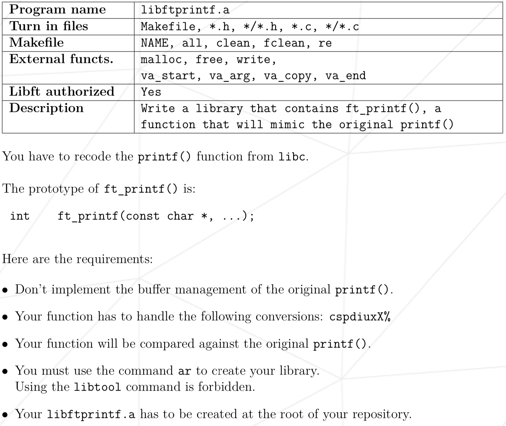
허용 함수부터 보겠습니다.
- malloc
- free
- write
- va_start, va_arg, va_copy, va_end
buffer는 따로 구현하지 않을 예정이기 때문에 malloc과 free 함수는 사용하지 않았습니다. 일반적인 printf는 출력을 버퍼에 모았다가 한 번에 내보내지만 저는 구현의 편의를 위해 write(1, ...)로 한 글자씩 바로 출력했습니다. (memmory 관리는 이후 작성할 minishell에서 질리도록 해줍니다.)
이중 눈여겨볼 함수는 va_ … 함수들인데, 각각의 설명은 이 문서를 참조했습니다. 간단히 설명하자면 이렇습니다. printf처럼 인자의 개수와 타입이 고정되지 않은 함수를 가변 인자(variadic) 함수라고 합니다. C에서는 <stdarg.h>의 매크로로 이 인자들을 다루는데, va_start(ap, s)로 마지막 고정 인자(s) 다음부터 읽을 준비를 하고, va_arg(ap, 타입)을 호출할 때마다 지정한 타입 크기만큼 스택을 따라가며 인자를 하나씩 꺼냅니다. 그래서 format 문자열에서 만난 specifier에 맞춰 타입을 직접 지정해줘야 합니다(%d면 int, %p면 void * 처럼요). 다 쓰고 나면 va_end(ap)로 정리합니다.
Bonus
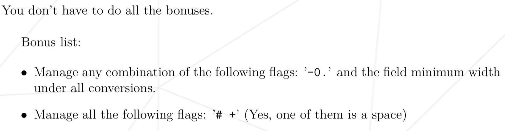
flag에 대한 내용이 나옵니다. 이제 여기서부터 과제가 애매해지기 시작하는데, 구현 범위를 확실하게 정해야합니다. 그래야 undefined behavior가 발생시, 적절한 답변을 할 수 있습니다.
과제에서 제시한 flag들에 대한 설명이 나오는 부분을 한번 보겠습니다. 과제와 ISO C99 §7.19.6.1 para 6을 기준으로 정리하면 flag의 의미는 다음과 같습니다.
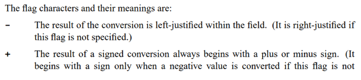
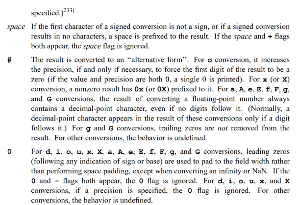
-: 필드 안에서 왼쪽 정렬 (기본은 오른쪽 정렬)+: 부호 있는 변환의 결과 앞에 항상 부호(+/-)를 붙임- 공백 : 부호가 없을 때 그 자리에 공백 하나를 붙임
#:x/X변환에서 0이 아닌 값에0x/0X접두사를 붙임0: 남는 자리를 공백 대신0으로 채움
width는 최소 출력 너비, precision은 (정수에서는) 최소 자릿수를 뜻합니다. 각 flag가 코드에서 실제로 어떻게 처리되는지는 아래 코드 설명으로 다루겠습니다.
코드 설명
전체 코드는 github repo에서 확인 가능합니다.
header 먼저 살펴보도록 하겠습니다.
변수명이 마음에 안들지만, 협업 경험이 전혀 없던 시기에 작성한 코드임을 감안해주시길 바랍니다.
#ifndef FT_PRINTF_H
# define FT_PRINTF_H
/*printf에서 사용할 함수들을 macro로 설정해주었습니다. */
/*이 당시엔 enum을 몰라서 이렇게 구현을 했습니다..*/
# define F_WDTH 64
# define F_PREC 32
# define F_ZERO 16
# define F_LEFT 8
# define F_PLUS 4
# define F_SHAP 2
# define F_SPACE 1
# include <stdarg.h>
# include <unistd.h>
/*specifier 문자를 만났을 때, 어떻게 출력을 해야되는지에 대한 정보를 저장할 구조체입니다.*/
typedef struct s_info
{
unsigned int flag; /*이 변수에 flag 정보를 비트연산으로 저장합니다.*/
int field[2]; # width/precision 값 저장 (field[0]=width, field[1]=precision)
int cnt; /*specifier 문자를 처리할 때, 출력하는 문자의 갯수를 저장합니다.*/
char cmd; /*어떤 specifier를 처리하는지 저장합니다.*/
} t_info;
int ft_printf(const char *s, ...);
int ft_putchr(char c, t_info *i);
int ft_printstr(char *s, t_info *i);
int ft_putnum(long long num, t_info *i, int cur);
int ft_puthex(unsigned long long n, t_info *i, int cur);
int ft_max(int a, int b);
int ft_padding(t_info *i, int n);
int ft_precision(t_info *i, int num, int n, int target);
#endif다음으로, ft_printf.c 파일의 함수들을 살펴보겠습니다.
int ft_printf(const char *s, ...)
{
va_list ap;
int cnt;
int tmp;
va_start(ap, s); # 변수 초기화
cnt = 0;
while (*s != '\0')
{
if (*s == '%') # format 문자를 만날 경우
{
s++;
tmp = ft_convert(&ap, &s); # format 문자를 ft_convert 함수에서 처리해줍니다.
}
else
tmp = write(1, s, 1); # format 문자가 아닐 경우 그대로 출력합니다.
if (tmp < 0)
return (-1); # 출력에 실패하면 -1을 반환합니다. 동적할당을 하지 않았기때문에 다른 조치는 취하지 않습니다.
cnt += tmp; # 출력한 문자 갯수만큼 계속 저장해줍니다.
s++;
}
va_end(ap);
return (cnt); # 최종적으로 출력에 성공한 문자의 갯수를 반환합니다.
}/*flag에 대한 정보를 먼저 처리해줍니다.*/
static int ft_convert(va_list *ap, const char **s)
{
t_info i;
int tmp;
i.flag = 0; # 변수들을 초기화 해줍니다.
i.cnt = 0;
i.field[0] = 0;
i.field[1] = 0;
while (**s == '#' || **s == ' ' || **s == '0' || **s == '-' || **s == '+')
{
tmp = "!!!!!!!!!!!!!!!!!!!!!!!!!!!!!!!!0!!1!!!!!!!2!3!!4"[(int)**s];
i.flag |= (1 << (tmp - '0'));
(*s)++;
}
while (**s == '.' || (**s >= '1' && **s <= '9'))
{
tmp = (**s == '.');
(*s) += tmp;
i.flag |= (F_WDTH >> tmp);
while (**s >= '0' && **s <= '9')
{
i.field[tmp] = i.field[tmp] * 10 + (**s - '0');
(*s)++;
}
}
return (ft_parse(ap, **s, i));
}앞서 말씀드렸던 norminette 온 몸 비틀기가 등장하는 순간입니다. 특이한 부분이 두 곳 보이는데, 이 부분들 먼저 짚고 넘어가겠습니다.
먼저 flag를 읽는 부분입니다.
tmp = "...0!!1!!!!!!!2!3!!4"[(int)**s];
i.flag |= (1 << (tmp - '0'));flag 문자를 if-else로 일일이 비교하는 대신, 문자의 ASCII 값으로 문자열을 인덱싱했습니다. 공백(32)·#(35)·+(43)·-(45)·0(48) 위치에 각각 '0'부터 '4'까지를 박아 두고 나머지 자리는 !로 채운 룩업 테이블입니다. 꺼낸 숫자 d로 1 << d를 만들면 바로 해당 flag 비트가 됩니다. 분기 없이 두 줄로 끝나서 norminette의 함수 길이 제한에도 유리했습니다.
width와 precision을 읽는 부분도 한 루프로 합쳤습니다.
while (**s == '.' || (**s >= '1' && **s <= '9'))
{
tmp = (**s == '.');
(*s) += tmp;
i.flag |= (F_WDTH >> tmp);
....이면 tmp가 1, 아니면 0입니다. F_WDTH(64)를 tmp만큼 오른쪽으로 밀면 width일 때는 64(F_WDTH), precision일 때는 32(F_PREC)가 되고, 저장 위치도 field[0]/field[1]로 갈립니다. 같은 코드로 둘 다 처리하는 셈입니다.
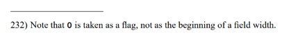
참고로 바깥 조건이 **s >= '1'로 시작하는 이유는, ISO C99에 0을 width의 시작이 아니라 flag로 취급하라고 되어있기 때문입니다(§7.19.6.1, 각주 232). 만약 precision만 있고, 숫자가 없는 경우 0으로 처리됩니다.
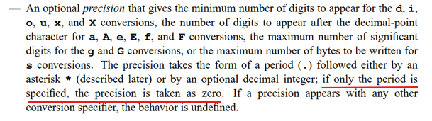
- precision이
.만 있고 숫자가 없으면 0으로 취급합니다.
static void ft_flag_validate(t_info *i)
{
if ((i->flag & F_ZERO) && (i->flag & F_LEFT))
i->flag &= ~F_ZERO;
if ((i->flag & F_ZERO) && (i->flag & F_PREC))
i->flag &= ~F_ZERO;
if ((i->flag & F_SPACE) && (i->flag & F_PLUS))
i->flag &= ~F_SPACE;
}
/*본격적으로 specifier를 처리해주는 로직입니다.*/
static int ft_parse(va_list *ap, char c, t_info i)
{
int status;
i.cmd = c;
ft_flag_validate(&i);
if (c == 'c')
status = ft_putchr((char)(va_arg(*ap, size_t)), &i);
else if (c == '%')
status = ft_putchr('%', &i);
else if (c == 's')
status = ft_printstr(va_arg(*ap, char *), &i);
else if (c == 'd' || c == 'i')
status = ft_putnum(va_arg(*ap, int), &i, 0);
else if (c == 'u')
status = ft_putnum(va_arg(*ap, unsigned int), &i, 0);
else if (c == 'p')
status = ft_puthex((unsigned long long)va_arg(*ap, void *), &i, 0);
else
status = ft_puthex(va_arg(*ap, unsigned int), &i, 0);
/* 왼쪽 정렬일 경우, 남는 공간을 padding으로 채워줍니다. */
if (status < 0 || ft_padding(&i, i.cnt) < 0)
return (-1);
return (i.cnt);
}static void ft_flag_validate(t_info *i)
{
if ((i->flag & F_ZERO) && (i->flag & F_LEFT))
i->flag &= ~F_ZERO;
if ((i->flag & F_ZERO) && (i->flag & F_PREC))
i->flag &= ~F_ZERO;
if ((i->flag & F_SPACE) && (i->flag & F_PLUS))
i->flag &= ~F_SPACE;
}여기서 ft_flag_validate 함수가 특이합니다. 각각의 if문의 구현 근거는 ISO C99에서 비롯됩니다.
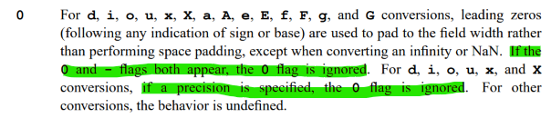
- precision에서 c s p % 연산자에서 precision이 지정된 경우는 undefiend bahavior이기 때문에 딱히 edge case로 처리하지 않습니다.
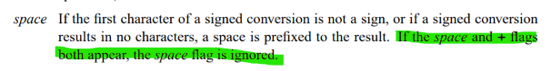
+가 같이 오면 공백을 무시else
status = ft_puthex(va_arg(*ap, unsigned int), &i, 0);정의되지 않은 specifier는 16진수처럼 처리됩니다. 어차피 ISO C99에서도 정의되지 않은 specifier에 대해서는 undefined behavior로 명시되어 있습니다.
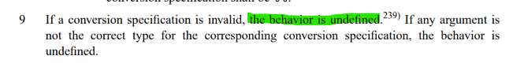
다음으로, parse.c 파일의 함수들입니다.
int ft_putchr(char c, t_info *i)
{
/*이 로직은 putnum, puthex에서 사용됩니다.*/
if (c == '!' && i->cmd != 'c' && i->cmd != 's')
return (0);
/* c와 %가 아닌경우 아래의 함수들에서 padding을 처리해 주고 있습니다. */
if ((i->cmd == 'c' || i->cmd == '%') && !(i->flag & F_LEFT))
if (ft_padding(i, 1) < 0)
return (-1);
i->cnt++;
return (write(1, &c, 1));
}
int ft_printstr(char *s, t_info *i)
{
int len;
len = 0;
/*mac 기준 printf에서는 null이 오면 (null)을 출력합니다. (다른 os는 동작이 다를 수 있습니다.)*/
if (s == NULL)
return (ft_printstr("(null)", i));
/* precision이 지정된 경우, precision만큼만 출력합니다. 예) %7.3s는 "abcde"를 " abc"로 출력합니다. */
while (s[len] && !((i->flag & F_PREC) && len >= i->field[1]))
len++;
if (!(i->flag & F_LEFT))
if (ft_padding(i, len) < 0)
return (-1);
/* 앞 부분 까지는 오른쪽 정렬의 경우에 padding부터 채웁니다. 이후 코드에서는 precision이 지정된 만큼만 str을 출력해 주고 있습니다.*/
len = 0;
while (s[len] && !((i->flag & F_PREC) && len >= i->field[1]))
{
if (ft_putchr(s[len], i) < 0)
return (-1);
len++;
}
return (0);
}
int ft_putnum(long long num, t_info *i, int cur)
{
int is_sign;
int is_put;
if (num < 0)
i->flag |= (F_PLUS + F_SPACE);
/*norminette 때문에 삼항연산자를 쓸 수 없어서 아래와 같이 작성했습니다.*/
num *= 1 * (num >= 0) + -1 * (num < 0);
is_sign = (i->flag & (F_PLUS + F_SPACE)) != 0;
/* %.0d, 0은 출력하지 않는 edge case 처리 */
is_put = !(num == 0 && cur == 0 && i->field[1] == 0 && (i->flag & F_PREC));
if (num < 10)
{
/* 0 패딩의 경우, 부호를 먼저 찍어 줍니다. */
if ((i->flag & F_ZERO) && ft_putchr("! !!+-"[i->flag & 5], i) < 0)
return (-1);
/* 왼쪽 정렬이 아닌 경우, padding을 먼저 채워줍니다. 예) %.4d, 42 = " 42" */
if (!(i->flag & F_LEFT))
if (ft_padding(i, ft_max(cur + is_put, i->field[1]) + is_sign) < 0)
return (-1);
/* 0 패딩이 아닌경우, 부호를 나중에 찍어 줍니다. */
if (!(i->flag & F_ZERO) && ft_putchr("! !!+-"[i->flag & 5], i) < 0)
return (-1);
if ((i->flag & F_PREC))
return (ft_precision(i, num, cur, num % 10 + '0'));
return (ft_putchr(num % 10 + '0', i));
}
if (ft_putnum(num / 10, i, cur + 1) < 0 || ft_putchr(num % 10 + '0', i) < 0)
return (-1);
return (0);
}
int ft_puthex(unsigned long long num, t_info *i, int cur)
{
char s;
int is_sign;
/* %x나 %p specifier의 경우 소문자로 출력 */
s = "0123456789ABCDEF"[num % 16] | 32 * (i->cmd == 'x' || i->cmd == 'p');
is_sign = (i->cmd == 'p' || (!(cur == 0 && num == 0) && (i->flag & 2))) * 2;
if (num < 16)
{
/* putnum과 동일합니다 */
if ((i->flag & F_ZERO) && is_sign != 0)
if (ft_putchr('0', i) < 0 || ft_putchr("xX"[i->cmd == 'X'], i) < 0)
return (-1);
if (!(i->flag & F_LEFT))
if (ft_padding(i, ft_max(cur + 1, i->field[1]) + is_sign) < 0)
return (-1);
if (!(i->flag & F_ZERO) && is_sign != 0)
if (ft_putchr('0', i) < 0 || ft_putchr("xX"[i->cmd == 'X'], i) < 0)
return (-1);
if ((i->flag & F_PREC))
return (ft_precision(i, num, cur, s));
return (ft_putchr(s, i));
}
if (ft_puthex(num / 16, i, cur + 1) < 0 || ft_putchr(s, i) < 0)
return (-1);
return (0);
}#include "ft_printf.h"
int ft_max(int a, int b)
{
if (a >= b)
return (a);
return (b);
}
int ft_padding(t_info *i, int n)
{
char padding;
padding = ' ';
if (i->flag & F_ZERO)
padding = '0';
while ((i->flag & F_WDTH) && n < i->field[0])
{
if (write(1, &padding, 1) < 0)
return (-1);
i->cnt++;
n++;
}
return (0);
}
int ft_precision(t_info *i, int num, int n, int target)
{
if (num == 0 && n == 0 && i->field[1] == 0)
return (0);
while ((i->flag & F_PREC) && n < i->field[1] - 1)
{
if (ft_putchr('0', i) < 0)
return (-1);
n++;
}
return (ft_putchr(target, i));
}/* precision이 지정된 경우, precision만큼만 출력합니다. 예) %7.3s는 "abcde"를 " abc"로 출력합니다. */
while (s[len] && !((i->flag & F_PREC) && len >= i->field[1]))
len++;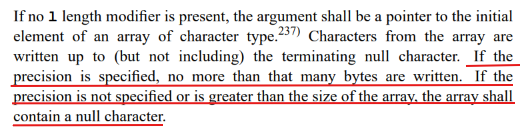
ft_printstr은 이 부분만 살펴보겠습니다. precision이 지정된 경우 precision만큼만 출력합니다. 즉 초과하는 자리에 대해서는 출력을 하지 않습니다. 하지만 남는 자리에 대해서는 딱히 무언가로 채워진다는 표준은 정의되어 있지 않습니다. (mac의 동작으로 처리해주었습니다.)
ft_putnum은 부호 있는 정수를 다룹니다. 음수가 들어오면 절댓값을 구해야 하는데, INT_MIN(-2147483648)은 int로 부호를 뒤집는 순간 오버플로우가 납니다. 그래서 인자를 처음부터 long long으로 받고,
if (num < 0)
i->flag |= (F_PLUS + F_SPACE);
num *= 1 * (num >= 0) + -1 * (num < 0);
is_sign = (i->flag & (F_PLUS + F_SPACE)) != 0;음수값은 flag에 기록만 하고 전부 양수로 처리합니다.
출력 부호 문자를 고르는 부분도 특이합니다.
ft_putchr("! !!+-"[i->flag & 5], i)& 5는 F_PLUS(4)와 F_SPACE(1) 비트만 남기므로 인덱스는 0·1·4·5만 나오고, 각각 !·공백·+·-에 대응됩니다.
- 음수일 때는 위에서
flag |= F_PLUS + F_SPACE(=5)를 줬기 때문에 자연스럽게-가 선택됩니다. - 부호가 없어야 하는 경우의
!는 “아무것도 출력하지 않는다”는 (저만의)약속입니다.ft_putchr맨 위에서 숫자 변환일 때!가 들어오면 0을 반환하도록 해 둬서(앞서 “이 로직은 아래에서 사용됩니다”라고 적어 둔 그 줄입니다), 부호가 없을 때 별도 분기 없이 출력만 건너뜁니다.
is_put = !(num == 0 && cur == 0 && i->field[1] == 0 && (i->flag & F_PREC));
if (num < 10)
{
/* 0 패딩의 경우, 부호를 먼저 찍어 줍니다. */
if ((i->flag & F_ZERO) && ft_putchr("! !!+-"[i->flag & 5], i) < 0)
return (-1);
/* 왼쪽 정렬이 아닌 경우, padding을 먼저 채워줍니다. */
if (!(i->flag & F_LEFT))
if (ft_padding(i, ft_max(cur + is_put, i->field[1]) + is_sign) < 0)
return (-1);
/* 0 패딩이 아닌경우, 부호를 나중에 찍어 줍니다. */
if (!(i->flag & F_ZERO) && ft_putchr("! !!+-"[i->flag & 5], i) < 0)
return (-1);
if ((i->flag & F_PREC))
return (ft_precision(i, num, cur, num % 10 + '0'));
return (ft_putchr(num % 10 + '0', i));
}아 이 부분이 제일 어렵습니다. 간단하게 설명드리자면, 본격적으로 숫자를 출력하기 전에 부호와 padding을 먼저 처리하는 로직입니다.
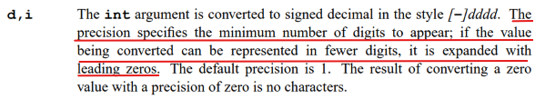
%d가 precision과 같이 오는 경우에 대해서 ISO C99에 정의가 되어 있습니다.
먼저 precision은 출력 digit의 최소 자리 갯수를 지정해주고, 남은 자리는 0으로 채워집니다. (참고로 flag의 padding과 precision의 남은 자리 0 채우기는 다르게 계산됩니다. 예) %8.5d, 42 = ” 00042”) precision을 초과하는 경우에 대해서는 str과 다르게 출력이 정상적으로 이루어 집니다. 여기서 %.0d에 0을 넣으면 아무것도 출력하지 않습니다. (별의 별 edge case가 다 있죠?). 그 역할을 하는게 첫 번째 줄의 is_put입니다.
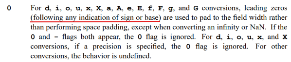
부호 출력 순서는 zero padding과 만나면 조금 다르게 구현됩니다. 표준에도 나와 있듯이, zero padding은 부호나 base(0x 같은 접두사)보다 먼저 나와야 합니다.
ft_puthex의 처리도 같은 결입니다. 겹치는 부분에 대해서는 설명을 생략하겠습니다.
%p의 처리부터 조금 살펴본다면,
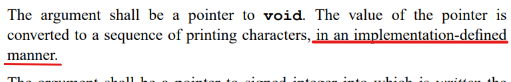
표준에서 %p의 출력 형식은 정하지 않습니다. NULL을 0x0으로 찍는 것, 소문자 16진수, 0x 접두사 모두 표준 의무는 아니고, mac 출력 기준으로 구현되어 있습니다.
is_sign = (i->cmd == 'p' || (!(cur == 0 && num == 0) && (i->flag & 2))) * 2;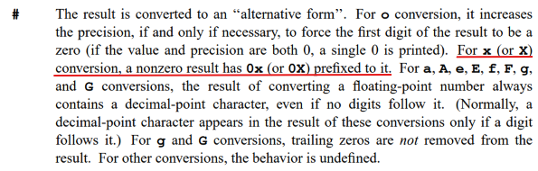
%p에서는 mac 기준으로 0x0으로 출력하도록 해주었습니다만, %#x에서는 표준에 따라 0으로 출력됩니다. (mac 역시 동일하게 동작합니다.)
결과
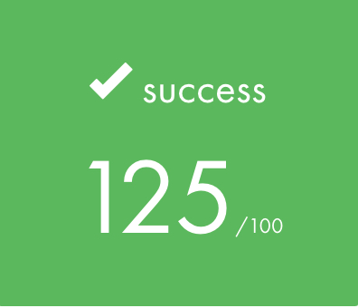
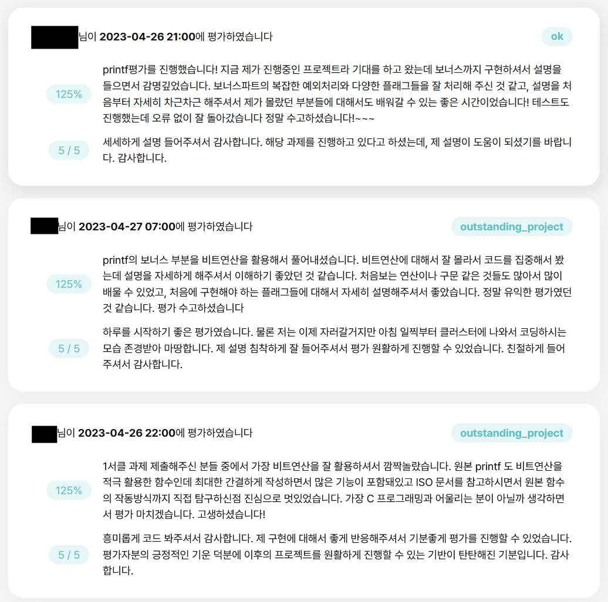
Outro
C언어의 깊이 있는 매력을 경험할 수 있었던 과제라고 생각합니다. 과제 구현의 범위가 난해하고, norminette을 지키는 것 때문에 어려움이 조금 있었지만, 그래도 퍼즐 푸는 마음으로 흥미롭게 구현했던걸로 기억합니다.
사실 솔직히 말하면 제가 제출한 코드는 norminette을 아주 완벽하게 위반하고 있습니다. norminette에서는 한 줄에 여러 동작을 하는 코드를 작성하지 말라고 나와있는데, 뭐..네 그렇습니다. 그래도 소설로 비유하면 가끔은 비유법과 은유법이 들어가줘야 재미가 있는것 아니겠습니까? 남들이 조금 못 알아보면 어떻습니까? 가끔은 이런 재미있는 코드도 존재해야 발전이라는게 있는거죠.
..농담이고 협업할때는 절대 이렇게 코드를 작성하지 않습니다. 사실 이 글을 작성하는 시점에서도 제 코드가 이해가 안되서 ai한테 물어보면서 작성했습니다. 어쨌든 긴 글 읽어주셔서 감사합니다!